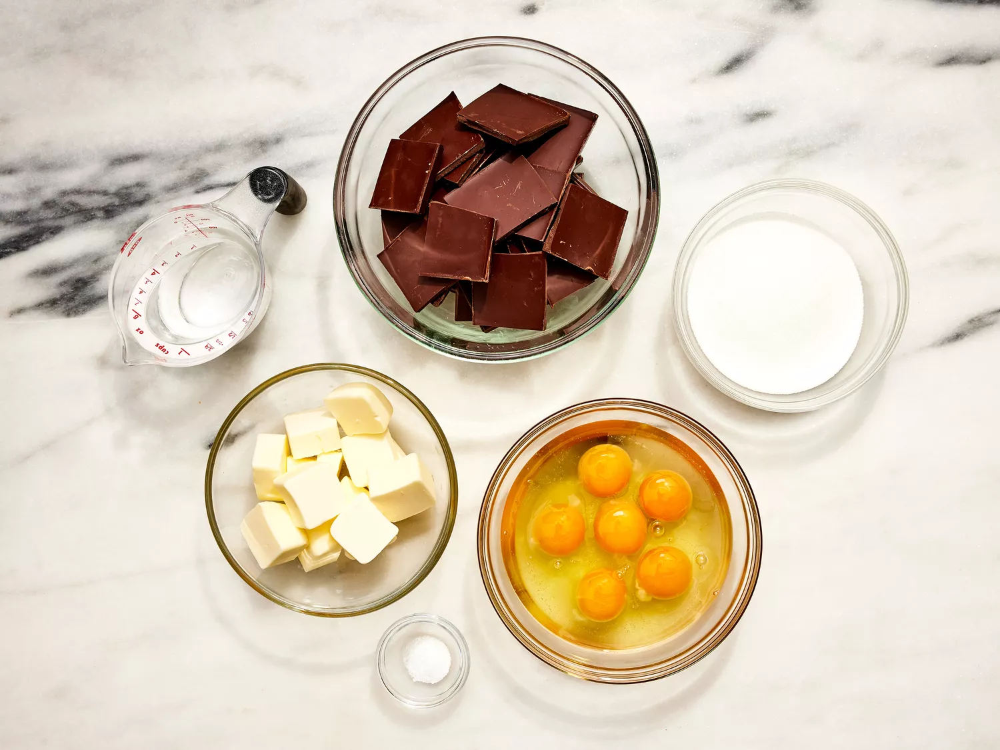
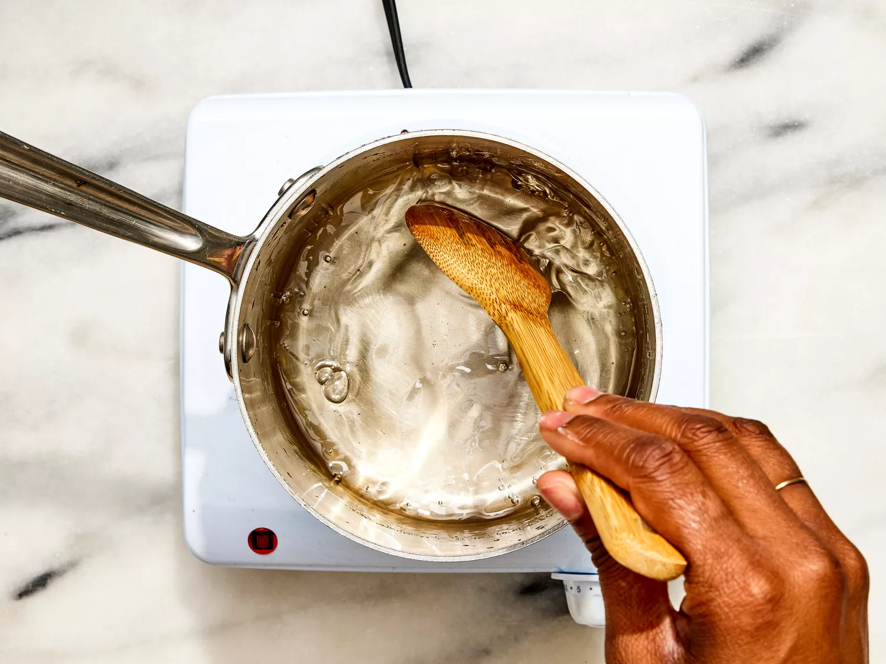
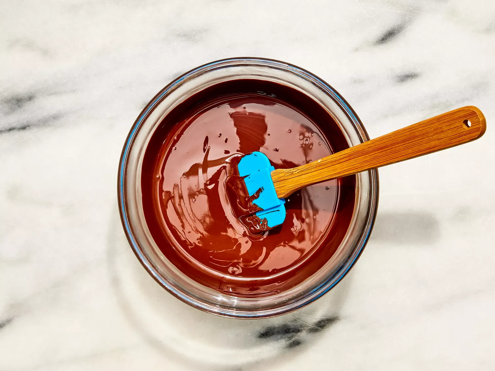
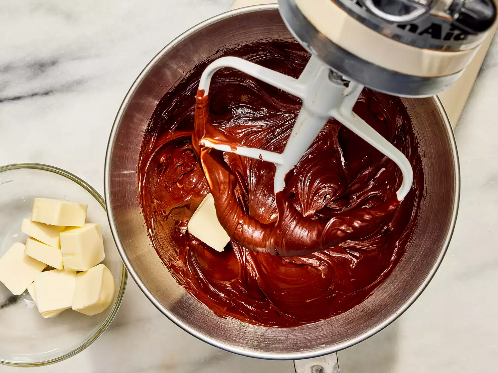
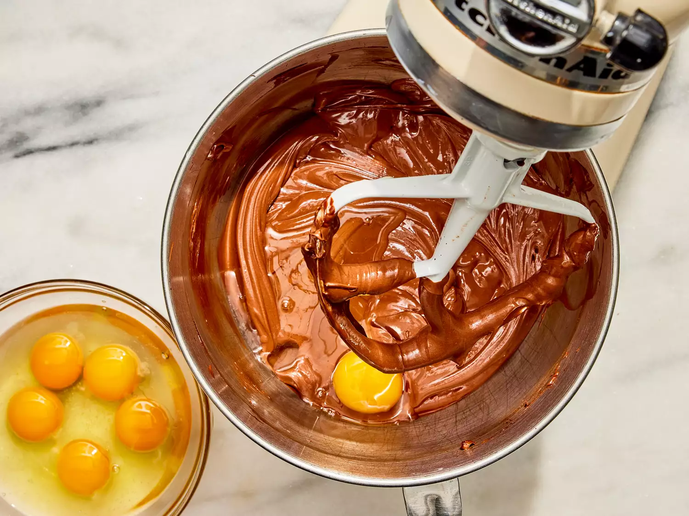
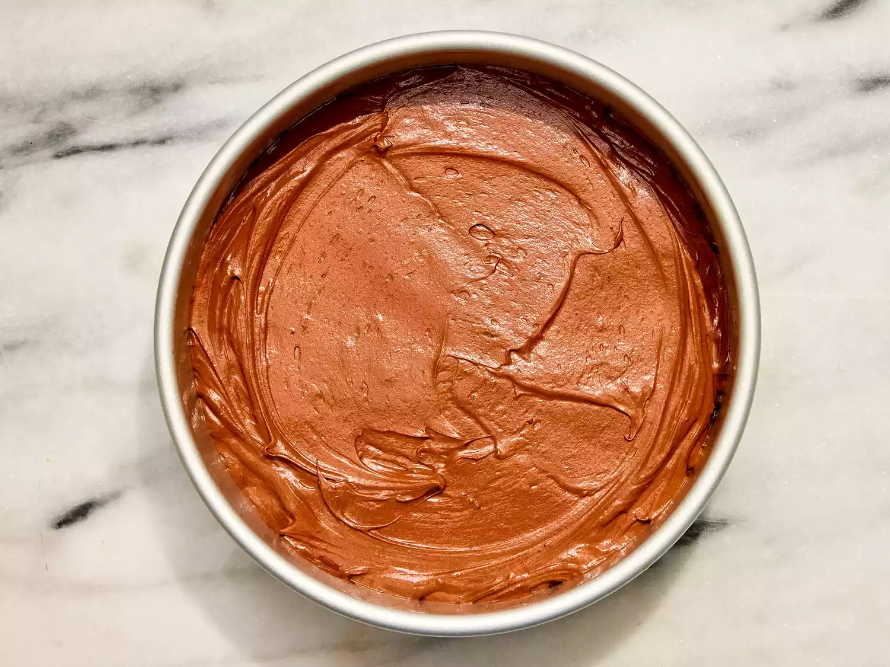
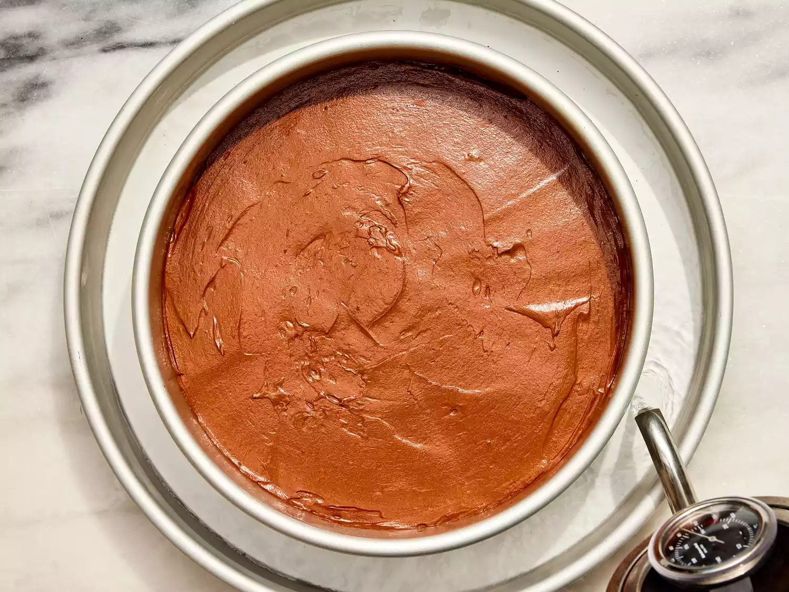
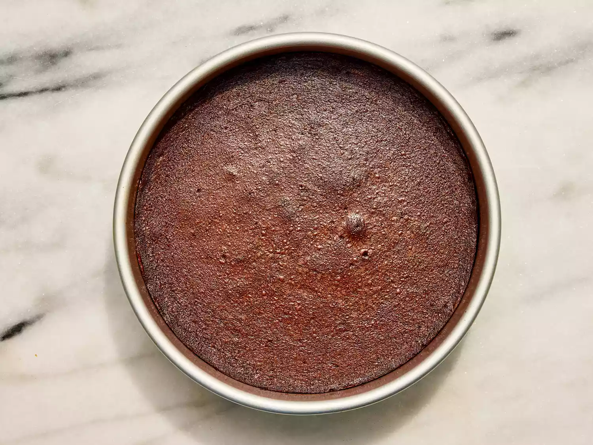
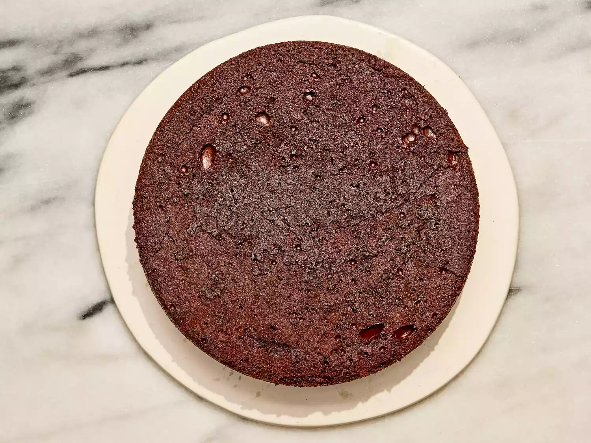

A dense flourless chocolate cake that's rich and fudgy. It's easy to make and perfect for a decadent chocolate dessert that's gluten free.
Gather all ingredients. Preheat the oven to 300 degrees F (150 degrees C). Grease a 10-inch round cake pan; set aside.
Combine sugar, water, and salt in a small saucepan over medium heat. Stir until completely dissolved; set aside.
Melt bittersweet chocolate in a microwave-safe glass or ceramic bowl in 15-second intervals, stirring after each interval, 1 to 3 minutes. Pour chocolate into the bowl of an electric mixer.
Cut butter into pieces; beat butter, one piece at a time, into chocolate until combined.
Beat in hot sugar water. Slowly beat in eggs, one at a time.
Pour batter into the prepared cake pan.
Have a pan larger than the cake pan ready; put the cake pan in the larger pan and fill the larger pan with boiling water halfway up the sides of the cake pan.
Bake cake in the water bath in the preheated oven for 45 minutes. The center will still look wet. Place cake in the refrigerator until thoroughly chilled, 8 hours to overnight.
To unmold, dip the bottom of the cake pan in hot water for 10 seconds and invert onto a serving plate.
Serve and enjoy!